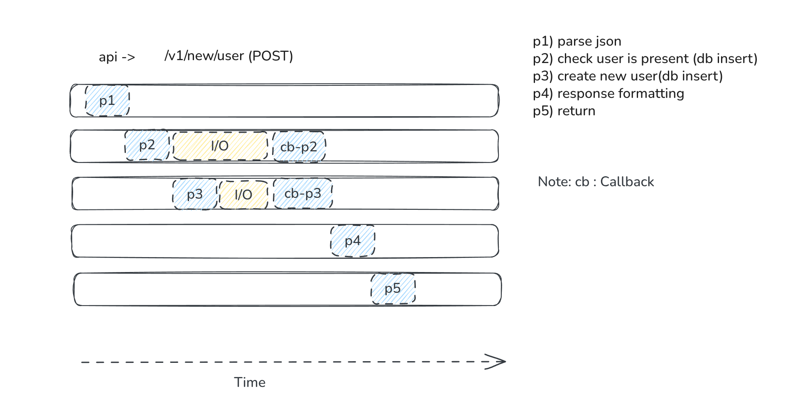
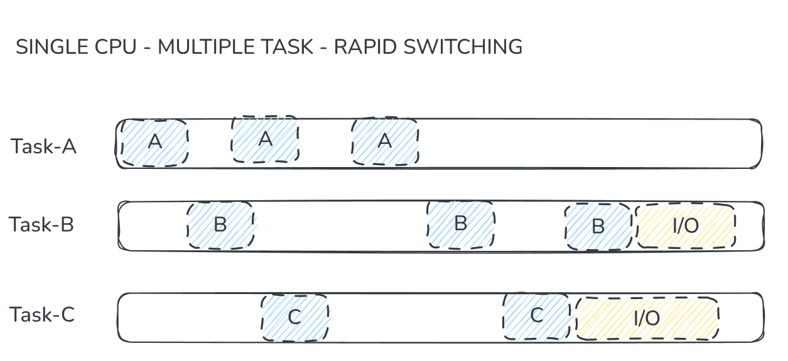

Zig has shipped a new async model in its 0.16 version, which I found very interesting. In this blog we will discuss this new async model of Zig and why this feature is so amazing. Before diving into the main topic, let's cover some common terms like what async means and how it differs from concurrency and parallelism. (Note: People who are comfortable with these terms can skip to the main topic.)
Async
The core idea behind async is non-blocking I/O within an event loop. A single thread starts a task, registers a callback, and moves on to do other work. When the slow operation (I/O, network, timer…) finishes, the callback runs. No extra threads are needed; just smart scheduling on one thread at a time.
The single thread never sits idle waiting for I/O. It dispatches work, handles other tasks, and processes callbacks as they arrive. All tasks overlap in wall-clock time even though only one runs on the CPU at any moment.
Let's take an everyday developer example: an API call, as shown in the image below. After the
initialization of process p2, it goes off to handle I/O (Disk/Network operation) and immediately
creates a new process p3. This demonstrates its non-blocking nature. To make the visualization
more convenient, assume each process is its own call stack, and a single thread is managing all
these processes.

Concurrency
Async and Conncurrency are often used interchangebly, but the describe different things. Async is a programming model a way of writinng code so single thread never blocks. Concurrency is about the structure not speed. Multiple tasks are in progress at the same time but not necessarily running at the same time. One cpu rapidely swithches between tasks, giving illusion of similarity. Concurrency is broder and the complex concept compared to Async.
Concurrency is based on the idea that multiple tasks can make progress during the same period of time, even on a single CPU core. Since a single core can execute only one instruction stream at any given instant, the tasks must take turns using the CPU. The operating system (or a runtime system) manages this by temporarily pausing one task and allowing another to run.
When a task is paused, the CPU saves its current execution state such as register values, the program counter,and other necessary information so that the task can later resume exactly where it left off.
A common way to achieve concurrency is by creating multiple threads, for example one thread per incoming request. The operating system's scheduler then decides which thread gets CPU time and for
how long. It rapidly switches between threads, creating the illusion that they are running simultaneously. However, context switching is not free.
Each switch requires the CPU to save the state of the currently running thread and restore the state of the next one. This overhead consumes both
CPU time and memory resources. As the number of threads increases, excessive context switching can become a performance bottleneck, which is one
reason modern systems often prefer lightweight concurrency mechanisms such as asynchronous programming for highly concurrent workloads.

Cooperative vs Pre-emptive
Pre-emptive Scheduling
There are two fundamental approaches a scheduler can use to switch b/w tasks. pre-emptive and cooperative scheduling. In a pre-emptive scheduler which is used by virtually all modern operating systems such as linux, windows and other UNIX systems a hardware timer generates periodic interrupts that force kernel to suspend the currently running thread and give another thread a chnage to execute. The running thread has no control over when this interuption occurs it can be pre-emputed at almost any instruction boundry
The mechanism ensures fair CPU sharing, prevents a single task to aquire all resources at a time, and improves system responsiveness. However beacuse thread can be interrupted at any instant the piece of data that previous thread was accessing is in incomplete state and if new thread accessed this data, this can cause major implecation on the result of the programm to ensure proper synchronization occur and threads will not end up accessing this incomplete state of data we use some mecahnisms to protect that data such as mutexes, spinlocks, semaphores or atomics operations are used.
Cooperative Scheduling
In a cooperative (or voluntary) scheduler, a task retains control o CPU until it explictily gives it up, usually by calling yield, await, sleeping or blocking on an I/O operation.
Unlike pre-emptive scheduling, the operating system or runtime never forcibly interupts a running task; context switches occur only at well-defined yield points chosen by programmer or framework. This design significantly simplifies reasining about concurrency beacuse shared data can't be modified by another task in the middle of computation unless execution reaches yield point. As a result, many race conditions become easier to avoid, and programs oten reauire fewer synchronization primitives such as locks and mutexes. Cooperative scheduling is th foundation of system like Javascipt event loop, Python's asyncio and many lightweight coroutine runtimes, where thousands of tasks can be managed effciently with minimal context switching overhead.
Parallelism is another whole new universe may be we will disscus this topic in another blogs for now lets move on to the main topic which is zig's new async mechanism
Zig's New Async I/O Model
Zig 0.16 introduces a fundamental shift in how asynchronous I/O and concurrency are handled: the std.Io interface. Unlike previous approaches where async/await were tightly coupled to specific runtime mechanics or stackless coroutines, Zig's new model completely decouples the expression of asynchrony from the execution model.
The Io interface is used by the caller (much like Allocator), allowing the application author to choose the underlying implementation. Code written against this interface remains identical whether it runs on single-threaded blocking I/O, a thread pool, OS-backed green threads (using io_uring), or stackless coroutines. The Io implementation determines how tasks are scheduled, multiplexed, and parallelized at runtime, freeing library authors from execution-model lock-in.
At the API level, developers use io.async() to spawn tasks and Future.await() to retrieve results. Crucially, io.async only expresses asynchrony: it states that operations can be reordered or executed out-of-order without breaking correctness. It does not mandate true concurrency.
Safety and resource management are baked into the design through Future.cancel(). By pairing defer future.cancel(io) catch {}; with await, developers ensure resources are properly cleaned up even on early returns or errors. Both await and cancel are idempotent, meaning calling them on an already-completed future simply returns the result or error, allowing the intuitive use of try without fear of resource leaks.
Zig elegantly resolves the infamous "function coloring" problem where async/await syntax traditionally "poisons" synchronous code and forces entire codebases to adopt async patterns. By decoupling the execution model from the business logic, Zig allows developers to express asynchrony at the API level while leaving the concurrency model entirely up to the application user. A single library can now run optimally in blocking, multi-threaded, or fully evented contexts without any code changes, achieving true runtime polymorphism.
Perhaps the most significant achievement of this design is complete colorblindness. Zig has historically solved the "What Color is Your Function?" problem, but this new model pushes it further: a single library can now run optimally across synchronous, asynchronous, and highly concurrent contexts without viral async/await syntax or runtime compromises. The standard library will provide multiple Io implementations, and developers can even plug in third-party or custom runtimes, ensuring that Zig's async model scales from embedded systems to high-throughput network servers without sacrificing performance or safety.
const std = @import("std");
pub fn todo(io: std.Io, task: []const u8) !void {
try std.Io.File.stdout().writeStreamingAll(io, task);
}
pub fn main(init: std.process.Init) !void {
const io = init.io; // Multi-Threaded
var future1 = io.async(todo, .{ io, "Task1\n" }); // The "calling"
var future2 = io.async(todo, .{ io, "Task2\n" });
var future3 = io.async(todo, .{ io, "Task3\n" });
var future4 = io.async(todo, .{ io, "Task4\n" });
var future5 = io.async(todo, .{ io, "Task5\n" });
var future6 = io.async(todo, .{ io, "Task6\n" });
var future7 = io.async(todo, .{ io, "Task7\n" });
var future8 = io.async(todo, .{ io, "Task8\n" });
_ = try future1.await(io); // The "Return"
_ = try future2.await(io);
_ = try future3.await(io);
_ = try future4.await(io);
_ = try future5.await(io);
_ = try future6.await(io);
_ = try future7.await(io);
_ = try future8.await(io);
}
This code illustrates a decoupled asynchronous execution model where the submission of work is explicitly separated from the retrieval of results. Rather than blocking the main flow while each I/O operation completes, main immediately schedules eight independent tasks using io.async, which returns a lightweight future handle for each. These futures act as non-blocking placeholders that defer actual execution to a background runtime, allowing the caller to continue orchestrating additional tasks without idle waiting. The real decoupling becomes apparent in the second phase: the explicit await calls are made only after all tasks have been queued, synchronously collecting results in a controlled manner. By splitting the lifecycle into a "fire-and-forget" scheduling stage and a deferred result-collection stage, this pattern prevents thread blocking, enables overlapping I/O operations, and cleanly isolates task orchestration from execution. This separation of concerns not only improves concurrency and resource utilization but also makes it easier to compose, monitor, and scale asynchronous workloads without coupling the caller directly to the underlying execution thread or I/O backend.